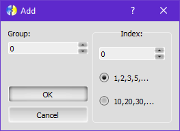
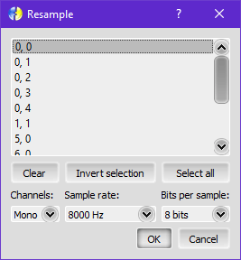
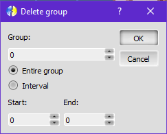
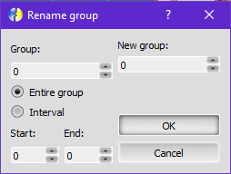
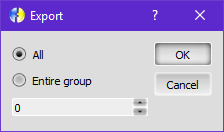

Menu Sounds
The Sounds menu is used to manipulate the sounds of the project.
See Sounds workspace for more details.
New
Create a new empty file.
Open
Open an existing file.
Save
Overwrite the last saved file, if it exist. Else, execute 'Save as...'.
Save as...
Save the sounds on a new file.
Add
Add one or more samples (sounds), starting on the next position from the current.
M.U.G.E.N. only
First, you must select all files you want to add. After it, the 'Add sounds...' window will be shown. In this window, you can choose some options used to define all the sprite information. The options are:
Group: sample's group.
Index: sample's index within the group, defined by the field value. You can choose the increment by selecting the appropriate option below the field (one by one or ten by ten).
If you hit OK, the options above will be applied. Else, the default options will be used (group: 0, index: 0).
Delete
Removes the current sample. Note: A confirmation will be shown if is defined in the Options window.
Duplicate
Change sound...
Change the current sample file.
Save sound as...
Save one or more sample to a file. This function displays the 'Items' window that defines what samples will be saved.
Resample
Resamples one or more sounds. This function uses the same resampler as Fighter Factory Ultimate, written by Erik de Castro Lopo, which is one of the fastest and better one.
In the resample window you must select all items you want to process. There's some buttons to help you select multiple items.
Channels: Number of channels to output. This is just a linear split/join operation.
Sample rate: Output sample rate.
Bits per sample: Number of bits per sample.
Note: The resampler works on floating-point data, so the less is this value, more loss of data will occur as we don't have enough precision to store the results.
Play
Play with loop
Stop
Delete group
M.U.G.E.N. only
Displays a window to the user choose a group to delete.
The options are:
Group: the group to delete.
Entire group: all samples of this group.
Intervall: only the indexes from Start to End.
Note: No confirmation will be shown if you hit OK.
Rename group
M.U.G.E.N. only
Displays a window to the user choose a group to rename (entire group or intervall) and the new group number.
The options are:
Group: the group to rename.
New group: the new group number.
Entire group: all samples of this group.
Intervall: only the indexes from Start to End.
Note: No confirmation will be shown if you hit OK.
Export...
M.U.G.E.N. only
Exports a group or all samples. The 'Export' window will be shown to define the samples that will be exported. Then, the samples will be saved and a text file will be generated with the sample information.
Import...
M.U.G.E.N. only
Import one or more samples to the editor from a Fighter Factory Export file. All samples described in the file will be imported.
You may be prompted to resolve collisions.
Note: The samples will be placed in the next position from the current sample.
Import from another project...
Import one or more samples from another project in the same Fighter Factory instance.
The options are:
Source
Project: the source project.
You must select the sprites you want to import, and add them to the destination list.
Destination
Besides the list of sounds to import, you can rename items to avoid conflicts and/or choose conflict resolution option:
Replace existing: replace sounds with the same identifier.
Skip (don't add): ignore sounds who identifier already exists.
Note: The sounds will be placed in the next position from the current sound.